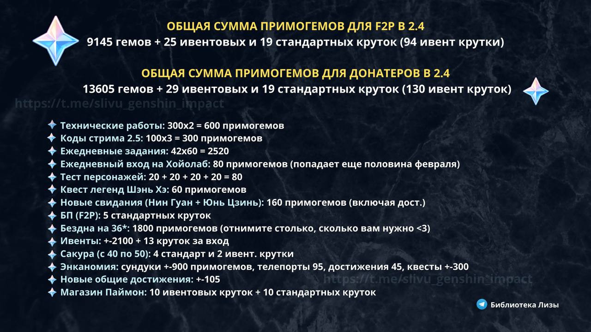
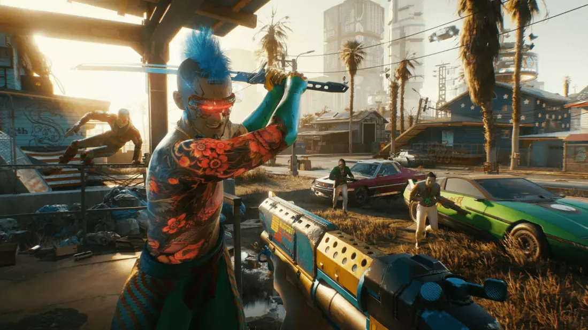

ПАТЧИ И ОБНОВЛЕНИЯ

06-01-2022
Сколько примогемов можно получить за патч 2.4 в Genshin Impact?
В Genshin Impact пришло новое обновление и это значит, что активные игроки могут снова постараться достать примогемы на всех героев, не вложив ни копейки.
Патч 2.4 только начался, а умные люди уже подсчитали, сколько получится достать Камней истока. Если судить по скриншоту, то больше всего за обновление получат донатеры — 13 605 гемов или 130 ивент-круток. У тех, кто привык жить «с затянутым ремнём», цифры куда скромнее — 9 145 гемов или 94 ивент-крутки.

02-01-2022
Слух: Предполагаемые подробности масштабного дополнения и патча 1.5 для Cyberpunk 2077
Патч 1.5 для Cyberpunk 2077 будет рассматриваться как мягкий перезапуск игры. Игра будет переименована в Cyberpunk 2077: Samurai Edition.
CDPR проведет большую трансляцию в феврале, чтобы рассказать о патче, аниме Cyberpunk и первом крупном дополнении.